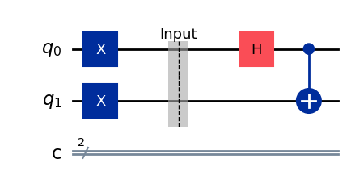

Bell State Generator
1. Overview & Problem Definition
The Bell State Generator is the foundational circuit used to prepare maximally entangled two-qubit states, known as Bell states or EPR (Einstein-Podolsky-Rosen) pairs.
In classical computing, the state of a multi-bit system is always separable—knowing the global state gives complete information about each individual bit. In quantum computing, entanglement allows two qubits to share a unified quantum state such that neither qubit possesses a definite individual state independent of the other. The Bell State Generator solves the problem of deterministically generating these non-local quantum correlations from simple computational basis inputs.
Classical Complexity
Classical physics cannot generate non-local quantum entanglement that violates Bell's inequalities.
Quantum Circuit Depth
Constant depth: requires exactly 2 qubits and 2 gate operations (\(H\) and \(CX\)).
2. Intuition
To create maximal entanglement between two independent, unentangled qubits:
- Create Superposition: We start with both qubits in the ground state \(|00\rangle\). We apply a Hadamard (\(H\)) gate to the first qubit (control qubit). This puts Qubit 0 into an equal superposition of \(|0\rangle\) and \(|1\rangle\), while Qubit 1 remains strictly \(|0\rangle\). At this stage, the system is still separable:
\(\frac{1}{\sqrt{2}}(|0\rangle + |1\rangle) \otimes |0\rangle = \frac{1}{\sqrt{2}}(|00\rangle + |10\rangle)\)
- Entangle via Control: We then apply a Controlled-NOT (\(CX\)) gate, using Qubit 0 as the control and Qubit 1 as the target:
- If Qubit 0 is \(|0\rangle\), Qubit 1 remains \(|0\rangle \longrightarrow |00\rangle\).
- If Qubit 0 is \(|1\rangle\), Qubit 1 flips to \(|1\rangle \longrightarrow |11\rangle\).
Because Qubit 0 is in a superposition of both states simultaneously, the \(CX\) gate executes both actions in superposition, entangling the two qubits into the state \(|\Phi^+\rangle = \frac{1}{\sqrt{2}}(|00\rangle + |11\rangle)\). Neither qubit has a defined state on its own, but measuring Qubit 0 instantly determines the state of Qubit 1.
3. Required Gates & Circuit Schematic
The standard Bell State Generator utilizes:
- Hadamard Gate (\(H\)): Creates an equal superposition.
- Controlled-NOT Gate (\(CX\)): Generates two-qubit conditional entanglement.
- Pauli-X (\(X\)) / Pauli-Z (\(Z\)) Gates: Optional pre-rotation gates used on the inputs to select which of the four orthogonal Bell states to prepare.
Input-to-Bell State Mapping
Depending on the initial computational basis input \(|q_1 q_0\rangle\), the circuit constructs one of four distinct maximally entangled Bell states:
| Input State \(|q_1 q_0\rangle\) | Pre-Gates Applied | Resulting Bell State | State Equation |
|---|---|---|---|
| \(|00\rangle\) | None | \(|\Phi^+\rangle\) | \(\frac{1}{\sqrt{2}}(|00\rangle + |11\rangle)\) |
| \(|01\rangle\) | \(X\) on \(q_0\) | \(|\Phi^-\rangle\) | \(\frac{1}{\sqrt{2}}(|00\rangle - |11\rangle)\) |
| \(|10\rangle\) | \(X\) on \(q_1\) | \(|\Psi^+\rangle\) | \(\frac{1}{\sqrt{2}}(|01\rangle + |10\rangle)\) |
| \(|11\rangle\) | \(X\) on \(q_1\) & \(q_0\) | \(|\Psi^-\rangle\) | \(\frac{1}{\sqrt{2}}(|01\rangle - |10\rangle)\) |

4. Mathematical Proof & State Evolution
Step 1: Initialisation & Superposition
The Bell State Generator produces one of four maximally entangled two-qubit states (the Bell basis) depending on the initial computational basis state $|x, y\rangle$.
We start with two qubits initialised in a basis state (e.g., $|00\rangle$). We apply a Hadamard gate to the first qubit to create an equal superposition:
\[ (H \otimes I) |00\rangle = \frac{1}{\sqrt{2}} (|0\rangle + |1\rangle) \otimes |0\rangle = \frac{1}{\sqrt{2}} (|00\rangle + |10\rangle) \]
Step 2: Entanglement Generation (CX Gate)
Next, we apply a Controlled-NOT (CX) gate, using the first qubit as the control and the second as the target. The CX gate flips the second qubit if and only if the first qubit is $|1\rangle$:
\[ CX \left( \frac{1}{\sqrt{2}} (|00\rangle + |10\rangle) \right) = \frac{1}{\sqrt{2}} (|00\rangle + |11\rangle) \]
This resulting state is the primary Bell state, denoted $|\Phi^+\rangle$. The states of the two qubits are now perfectly correlated and cannot be factored into independent single-qubit states.
Step 3: Generating the Four Bell States
By altering the initial input state $|x, y\rangle$, the same circuit generates the complete set of four mutually orthogonal Bell states:
• From $|00\rangle$: $|\Phi^+\rangle = \frac{1}{\sqrt{2}} (|00\rangle + |11\rangle)$
• From $|01\rangle$: $|\Phi^-\rangle = \frac{1}{\sqrt{2}} (|00\rangle - |11\rangle)$
• From $|10\rangle$: $|\Psi^+\rangle = \frac{1}{\sqrt{2}} (|01\rangle + |10\rangle)$
• From $|11\rangle$: $|\Psi^-\rangle = \frac{1}{\sqrt{2}} (|01\rangle - |10\rangle)$
Step 4: Measurement & Conclusion
When a Bell state is measured in the computational basis, the outcome is probabilistic (50% chance of each state), but perfectly correlated. For instance, measuring $|\Phi^+\rangle$ always yields either $00$ or $11$. Measuring one qubit instantly dictates the state of the other, illustrating maximal quantum entanglement.
Conclusion: Measuring a single qubit in a Bell state yields 0 or 1 with equal probability (50%). However, due to entanglement, measuring the first qubit instantly determines the state of the second qubit, demonstrating non-local quantum correlations.
5. Interactive Visualisation
When observing a Bell State generator inside an interactive tracking module, notice these distinct behaviors:
- Amplitude Histogram: Shows two distinct probability peaks of height \(0.5\) at \(|00\rangle\) and \(|11\rangle\), with zero probability for cross-terms \(|01\rangle\) and \(|10\rangle\).
- Single-Qubit Bloch Spheres: For a maximally entangled Bell state, inspecting Qubit 0 or Qubit 1 on an individual single-qubit Bloch sphere shows the state vector shrinking to the center point \((0,0,0)\). This represents a maximally mixed reduced state (\(\\rho_A = \frac{1}{2}I\)), visually demonstrating that individual qubit states do not exist independently in an entangled pair.
- Density Matrix Heatmap: Shows non-zero off-diagonal coherences (\(\\rho_{00, 11} = \\rho_{11, 00} = 0.5\)), which prove the presence of quantum coherence rather than classical statistical uncertainty.
Dynamic State Tracking
Interactive module (amplitude histograms, Bloch spheres) to simulate the algorithm live.
Launch Interactive Visualiser6. Python Code Implementation
from qiskit import QuantumCircuit
from qiskit.quantum_info import Statevector, DensityMatrix, Operator
from qiskit.visualisation import (
plot_histogram,
plot_bloch_multivector,
plot_state_qsphere
)
from qiskit_aer import AerSimulator
from qiskit.primitives import StatevectorSampler
from IPython.display import display
# ------------------------------------------------------------------
# Bell State Generator
# ------------------------------------------------------------------
def build_bell_circuit(bell_type="Phi+"):
qc = QuantumCircuit(2, 2, name=f"Bell_{bell_type}")
# Prepare input state
if bell_type in ["Psi+", "Psi-"]:
qc.x(1)
if bell_type in ["Phi-", "Psi-"]:
qc.x(0)
qc.barrier(label="Input")
# Bell State Generator
qc.h(0)
qc.cx(0, 1)
return qc
# ------------------------------------------------------------------
# Select Bell State
# Options:
# "Phi+"
# "Phi-"
# "Psi+"
# "Psi-"
# ------------------------------------------------------------------
qc = build_bell_circuit("Psi-")
# ==============================================================
# 1. Circuit Diagram
# ==============================================================
print("Quantum Circuit")
display(qc.draw("mpl"))
# ==============================================================
# 2. Statevector
# ==============================================================
state = Statevector.from_instruction(qc)
print("Statevector")
display(state.draw("latex"))
# ==============================================================
# 3. Density Matrix
# ==============================================================
density = DensityMatrix(state)
print("Density Matrix")
display(density.draw("latex"))
# ==============================================================
# 4. Bloch Sphere
# ==============================================================
print("Bloch Sphere")
display(plot_bloch_multivector(state))
# ==============================================================
# 5. QSphere
# ==============================================================
print("QSphere")
display(plot_state_qsphere(state))
# ==============================================================
# 6. Unitary Operator
# ==============================================================
print("Unitary Operator")
display(Operator(qc).data)
# ==============================================================
# 7. Add Measurements
# ==============================================================
qc_measure = qc.copy()
qc_measure.measure([0, 1], [0, 1])
# ==============================================================
# 8. Sampler
# ==============================================================
sampler = StatevectorSampler()
job = sampler.run([qc_measure], shots=1024)
sampler_result = job.result()
# Extract counts
bitstrings = sampler_result[0].data.c.get_counts()
print("Sampler Counts (1024 shots)")
print(bitstrings)
# ==============================================================
# 9. Aer Simulator Counts
# ==============================================================
simulator = AerSimulator()
result = simulator.run(qc_measure, shots=1024).result()
counts = result.get_counts()
print("\nAer Simulator Counts")
print(counts)
# ==============================================================
# 10. Histogram
# ==============================================================
print("Measurement Histogram")
display(plot_histogram(counts))7. Caveats & Real-World Limits
- Two-Qubit Gate Error Rates: On modern NISQ (Noisy Intermediate-Scale Quantum) devices, single-qubit gates (\(H\)) achieve high fidelities (>99.9%), but two-qubit entangling gates (\(CX\)) are roughly an order of magnitude noisier (~99.0% to 99.5% fidelity).
- Decoherence (\(T_1\) and \(T_2\)): Entanglement is exceptionally fragile. Thermal relaxation (\(T_1\)) and dephasing (\(T_2\)) cause the pristine state \(|\Phi^+\rangle\) to degrade over time into a mixed state described as a Werner State:
\(\\rho = p |\Phi^+\rangle\langle\Phi^+| + \frac{1-p}{4} I_4\)
- Measurement Readout Errors: Imperfections in state discrimination can cause an physical detector to misclassify a \(|00\rangle\) state as \(|01\rangle\) or \(|10\rangle\), creating false noise in the output histogram.
8. Applications
- Quantum Teleportation: The prepared Bell pair serves as the non-local quantum resource channel required to transmit an unknown qubit state across classical links.
- Superdense Coding: Allows two classical bits of information to be sent using a single physical qubit transmission by manipulating an entangled Bell pair.
- Quantum Key Distribution (E91 Protocol): Uses the violation of Bell's inequalities (CHSH testing) on generated Bell pairs to detect eavesdroppers in quantum networks.
- Entanglement Swapping: Forms the baseline building block for quantum repeaters, enabling long-distance quantum communication across disparate nodes.